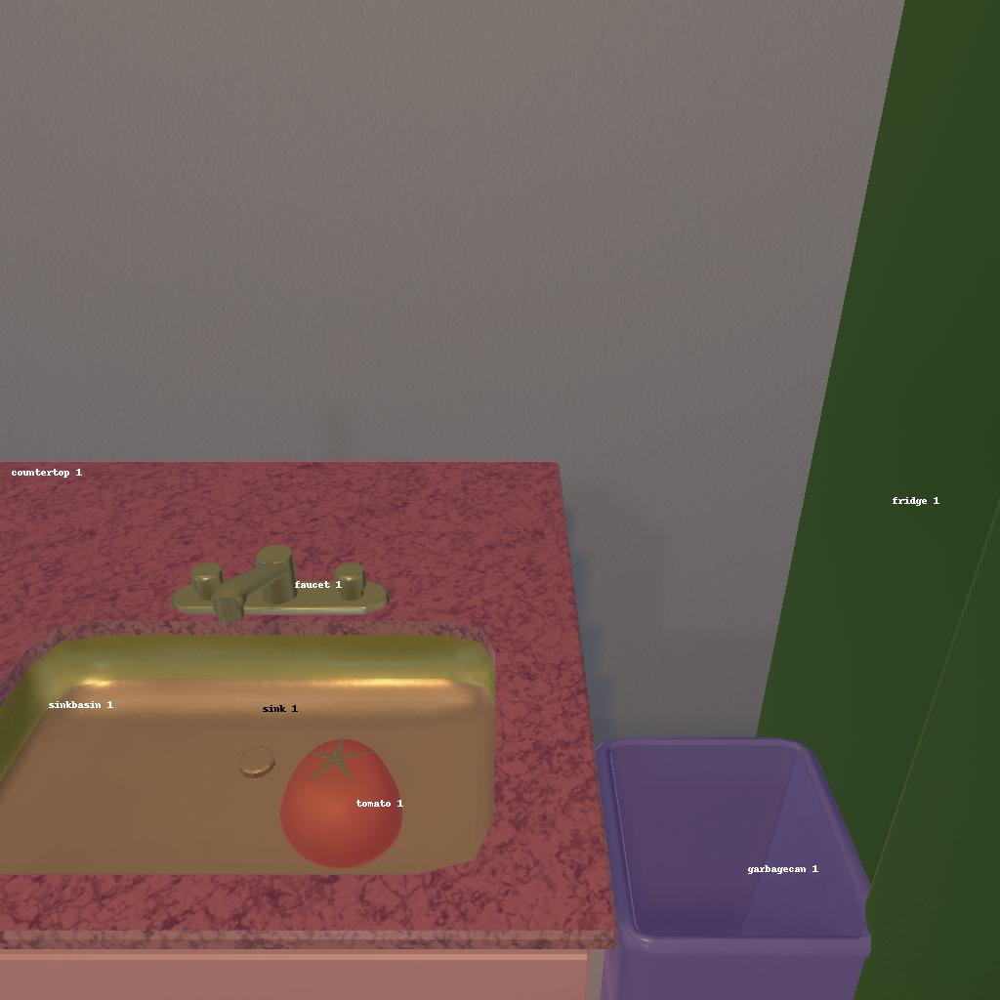

---------------------------------------------------------task: 13---------------------------------------------------------
--------------------------------------------------------------------------------------------------------------------------------------------------------------------
--------------------------------------------------------------------------------------------------------------------------------------------------------------------
Step:--------------------------------------------------------------------------10-------------------------------------------------------------------------------
----------------------------------------
VLM Prompt:
Image1:
Image2:
Image3:
**Instruction**
1. Analyze the provided image to identify all visible household objects, focusing on those relevant to the task description "clean some tomato and put it in garbagecan."
2. Use the analysis of the image and the task hint "The agent must find an object of the desired type, pick it up, go to a sink or a basin, clean the object with a sink or basin, and then find the correct location to place it and put it down there. The agent does not need to use soap bottle or faucet to clean the object, and the agent just needs to do action that is "clean the object with the sink or sink basin"." to answer the question: what is the most reasonable action in the choices for the task description "clean some tomato and put it in garbagecan"?
4. Decide and write the answer using the template: The answer is: (i): , where i is the real number. If there is no desired object in the image, search every place based on **Initial Observation** to find the object. And if no one is exactly correct, choose a similar answer.
**Initial Observation**
You are in the middle of a room. Looking quickly around you, you can see countertop (1-2), cabinet (1-11), garbagecan (1), toaster (1), sinkbasin (1), fridge (1), sink (1), microwave (1), drawer (1-3), stoveburner (1-4), coffeemachine (1), diningtable (1)
**Answer Choices**
(1): go to countertop 1
(2): go to cabinet 1
(3): go to cabinet 2
(4): go to cabinet 3
(5): go to garbagecan 1
(6): go to cabinet 4
(7): go to toaster 1
(8): go to fridge 1
(9): go to cabinet 5
(10): go to microwave 1
(11): go to countertop 2
(12): go to cabinet 6
(13): go to cabinet 7
(14): go to drawer 1
(15): go to stoveburner 1
(16): go to stoveburner 2
(17): go to cabinet 8
(18): go to drawer 2
(19): go to stoveburner 3
(20): go to stoveburner 4
(21): go to coffeemachine 1
(22): go to cabinet 9
(23): go to cabinet 10
(24): go to cabinet 11
(25): go to diningtable 1
(26): go to drawer 3
(27): take tomato 1 from sinkbasin 1
(28): take faucet 1 from sinkbasin 1
(29): examine sinkbasin 1
**Answer**
Let's think step by step by following the instructions.
----------------------------------------
----------------------------------------
Original Response:
The task is to clean a tomato and put it in the garbage can. From the initial observation, we know there is a sink and a sinkbasin available for cleaning, and a garbagecan to dispose of the tomato.
Looking at the images provided, we can see a tomato (tomato 1) in the sinkbasin (sinkbasin 1), which is the object we need to clean. There is also a garbagecan (garbagecan 1) visible in the image.
Given the task description and initial observation, the most reasonable action to perform next would be to take the tomato from the sinkbasin, clean it, and then put it in the garbagecan. Since the cleaning action is not explicitly listed in the answer choices, we will select the action that involves taking the tomato, which is the first step in completing the task.
The answer is: (27): take tomato 1 from sinkbasin 1.
----------------------------------------
----------------------------------------
>>> Refine Original VLM Response and Get Pure Action: take tomato 1 from sinkbasin 1
----------------------------------------
-----------------------------------------------------------------
Running time: 29.67558717727661 seconds
Total Money: 7.956850000000002
-----------------------------------------------------------------
-----------------------------------------------------------------
Text Observation:You pick up the tomato 1 from the sinkbasin 1.
-----------------------------------------------------------------
UNSUCCEED